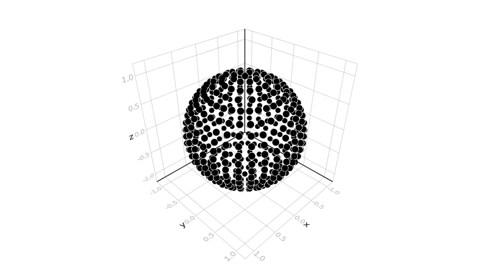
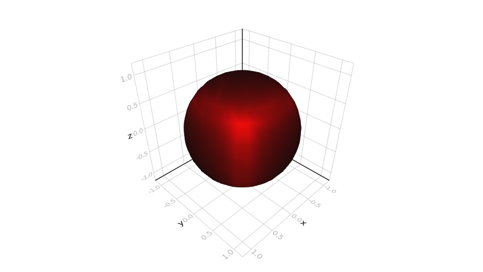
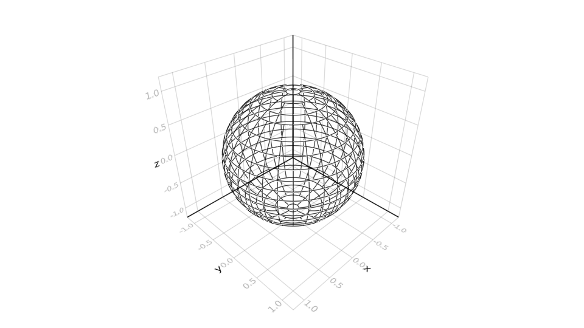
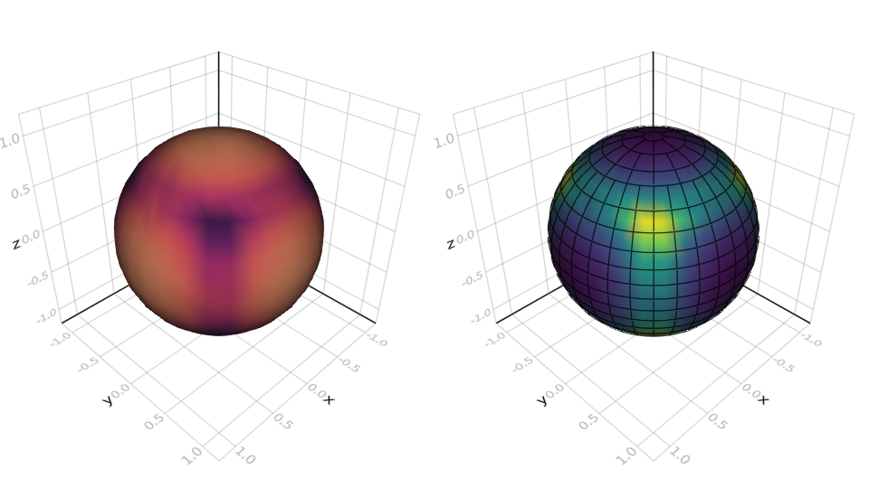

Plotting with Makie
SphereSurfaceHistogram makes use of Requires.jl to dynamically load plotting and mesh generation functionality when Makie is present. Using Makie recipes, the following plotting methods will be exposed:
scatter(binner)
scatter!(binner)This method scatters points that match the position of each bin. It can take all the typical Makie.scatter/Makie.scatter! arguments.

mesh(binner)
mesh!(binner)This method creates a mesh where each vertex corresponds to a bin of the given binner::SphereSurfaceHistogram. One can easily color this mesh according to the bin counts by mapping each binner.bins to a color. For example:
bin_max = maximum(binner.bins)
mesh(binner, color=map(b -> RGB(b/bin_max, 0.0, 0.0), binner.bins))
linesegments(binner)
linesegments!(binner)This method plots the boundaries of each bin. To avoid clipping/z-fighting, these lines are plotted at a slightly larger radius (1.001).

histogram(binner)
histogram!(binner)This method is the main plotting function. It constructs a mesh just like mesh and maps each bin to a color from a colormap. The keyword arguments include:
outline = false: When true each bin is outlined. The outlines are equivalent to the ones created bylinesegments.linecolor = :black: The color used for the outline.colormap = :matter: The colormap used to color mesh.colorscale = :absolute: This defines the scale used when mapping bins to colors.:absolutesetscolorrange = [0, maximum(binner.bins)]:relativesetscolorrange = [minimum(binner.bins), maximum(binner.bins)]:statickeeps thecolorrangeuntouched, i.e. it allows you to pick it
colorrange: defines the bin values representing the first and last color of thecolormap.transparency = false: Much like standard Makie this enables transparency. Set this totrueif your colormap is transparent.

All examples use binner = SSHBinner(500) with one million random vectors normalize(2rand(3) .- 1.0).
Plotting without Makie
If Makie is not your cup of tea you can still make use of the mesh, point and line generation methods defined in SphereSurfaceHistogram. They are exposed by using GeometryTypes. The following methods are implemented:
to_cartesian(theta, phi)Returns the cartesian representation of a unit vector given by two angles in spherical coordiantes
face_mesh(binner[, extrude=0])This method generates a disconnected GLNormalMesh where (connected) faces represent bin areas. By setting extrude > 0 these faces will be extruded outwards, visualizing where bins are located.
Note that this representation is not entirely correct as it does not include the curvature of bins.
vertex_mesh(binner)Generates a GLNormalMesh where each point corresponds to the center of a bin. The vertices of this mesh are in the same order as the bins in binner.bins. Thus you can directly map bins to colors and attach them to the mesh.
This function is used by Makie.mesh and histogram to generate the visualization of the histogram.
bin_positions(binner)Returns an array of Point3f0 corresponding to the centers of each bin. The array is in the same order as binner.bins.
line_segments_minimal(binner)Returns an array of Point3f0 which correspond to line segments. These segments mark the area of each bin, simialrly to face_mesh. This version does not interpolate any points so small binners may look more rectangular than they should.
line_segments(binner[; N_fragments])Just like line_segments_minimal, this function generates an array of Points corresponding to line segments marking the area of each bin. This method however include interpolation, so that each line is curved.
The keyword argument N_fragments controls how many points are interpolated over an arc [0, $\pi$]. It will only interpolate when necessary.